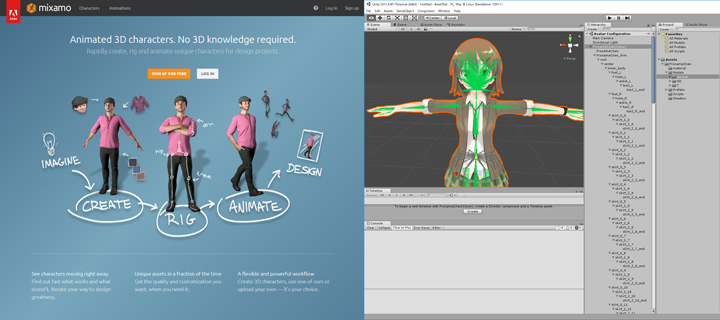

HSP : Hot Soup Processor ver3.6 / onion software 1997-2021(c)

HGIMG4 Unity Cooperation Guide
- Introduction
- Professional student sample demo list
- Output flow by Unity FBX Exporter
- Apply animation on Unity
- Copyright and license
Introduction
By linking HGIMG4 and Unity, you can apply more advanced motions and convert 3D models.
You can check a sample of 3D character animation using HGIM G4 from the "Professional Student Demo" (sample / pronama3d) included as a sample.
This is a sample demo using the programming live character "Professional student" material.

Professional student sample demo list
This is a sample for specular rendering with multipath. The background uses a cubemap skybox.
Every time you click or press the space key, the number of professional students will increase. This is a sample that displays a large number of character animations.

You can switch between various effects, such as a CRT TV-like display with post-processing.

This is a sample of dropping a box using a physics engine. Each time you click or press the spacebar, a box will be created.

Cooperation with Unity
By using Unity, which is widely used as a 3D game engine and tool, as a hub, it has become easier to use various models.
By outputting the 3D model / animation data loaded on Unity as an FBX file that can be used from HGIMG4 by Unity FBX Exporter, you can utilize the assets on Unity, model data such as VRM, and animation. ..

We are also developing a GUI tool "HSP3d" for managing material and model / animation data.
By managing and setting a wide variety of 3D data in an integrated manner, it is possible to use complex data in a simple form from HSP3.
Output flow by Unity FBX Exporter
Create a new project in Unity (Unity 2017.3 or later) and prepare (copy) the materials to be used under the Asset folder.
Select the FBX file included in the material to see a preview of the model in the Inspector.
Here, I will use the normal version of Prosei-chan. If you want to output the animation, you need to set the animation type of the avatar to Generic.
If the animation type is Humanoid, it's a good idea to duplicate the FBX before setting the Generic model.
Once you've set it up, place the model on the scene. Dropping the FBX into the Hierarchy window places the model in the scene.

Download FBX Exporter from the Asset Store and import it into your current project To do. FBX Exporter is a free asset officially distributed by Unity.

* This article is based on Unity FBX Exporter ver.1.3.0f1. FBX Exporter works with Unity 2017.3 and later, but we do not guarantee it to work with all versions.
By importing the assets, you will be able to select "Export to FBX ..." from the right-click menu of the model placed on the scene.
Basically, you will open the FBX Exporter window from here and output the FBX file.
In the FBX Exporter window options, set "Export Format" to Binary.
After that, the FBX file will be output to the specified folder by pressing the "Export" button.
In order to use the output FBX file from HSP3 (HGIMG4), it is necessary to convert the model data to a .gpb file. Use the included GPB converter (gpbconv.exe) to convert to a .gpb file. From the tool, select the FBX file and press the "Convert" button to generate a .gpb file with the same name as the FBX file and a .material file.

The .gpb file is only model data, so if you are using a texture (image) file, you need to prepare it separately. (HGIMG4 recommends .png format for the texture image used by the model.)
Copy all .gpb files, .material files, and texture image (.png) files output from the GPB converter to the res folder under the script to be used.
If you want to output a model that includes animation, set the animation controller for the model in the scene so that the animation will be played when Unity is executed.
The FBX Exporter may give an error when outputting a model with a bone structure.
This is often due to the RootBone in the model's Skinned Mesh Renderer settings being improperly set.
By setting RootBone to a hierarchy close to the root of the bone structure, you should be able to output correctly.
* In the current version, due to restrictions during model conversion of HGIMG4, if there is rotation or scaling in a layer with a skinned mesh renderer of the model, it may not be displayed correctly on HGIMG4. When outputting some model data such as professional student model, please set the rotation of the mesh hierarchy to 0 and the scale to 1. There are no particular restrictions on rotation or scaling in other layers.
* Some parts such as spats and socks may flicker when outputting a professional student model.
This is because the replacement materials are displayed in an overlapping manner, and in order to display them correctly, the FBX material import must be set as follows.
In the PronamaChan.fbx file inspector, you can set the material settings when importing the model.

Assign a material file (.mat) under the Materials / Unlit folder to each material.
For example, for "BODY_skin", assign the material of "skin".
Since "BODY_skin.002", "BODY_skin.003", and "BODY_skin.004" do not need to be displayed as the replacement material, specify the "transparent" material.
The transparent material is not displayed on Unity, but when displayed on HGIMG4, the transparent material is displayed as white.
Therefore, edit the .material file that sets the display material in HGIMG4.
When the GPB converter converts the PronamaChan.fbx file, the material settings will be saved as PronamaChan.material. Open this file with a text editor and edit the "material transparent_187: colored" item.
material transparent_187 : colored
{
u_diffuseColor = 1, 1, 1, 1
u_inverseTransposeWorldViewMatrix = INVERSE_TRANSPOSE_WORLD_VIEW_MATRIX
u_matrixPalette = MATRIX_PALETTE
renderState
{
depthFunc = NEVER
}
technique
{
pass
{
defines = SKINNING;SKINNING_JOINT_COUNT 187
}
}
}
By setting the renderState item, it is specified not to draw the material of transparent_187. It should now display correctly. If you do not use (hide) spats or socks, you must also specify the material for the spats or socks as transparent.
Apply animation on Unity
There are several ways to apply animation to your model, but as a site where you can easily get animation data, mixamo > There is. mixamo is free to download as an FBX file with animation applied to various models. It is a highly licensed product.

Even with assets on Unity, various motion data and tools for creating are available, so it is possible to do a considerable part for free.
Most animation data, including mixamo, is intended for humanoid rigs with an animation type of Humanoid.
In order to output animation with FBX Exporter, it must be a Generic rig, and the standard Unity function cannot convert Humanoid and Generic.
However, some paid assets support this conversion, "UMotion Pro" can be used as one of them.
In this professional student sample demo, UMotion Pro is used to convert the animation data of mixamo. "UMotion Pro" itself, animation data You can also create, so the range of utilization should be expanded.
3D avatar file format, "VRM" format, UnivVRM and output it with FBX Exporter.

By using Unity as a hub, you can utilize a wide range of 3D models and animations. By controlling 3D from HSP3 scripts, expand the range of applications with your ideas, such as easy game creation and test applications.
Copyright and license
The runtime and script files included in the archive can be attached, duplicated, reorganized and redistributed under the same license as the HSP itself.
The data created by the user using the tool and the rights of the generated script belong to the user who created it.
Please refer to the following for the license of the 3D model (Professional student) used in the sample.
Kei Kurui (Professional student) 3D model Breath Pronama LLC * For details, https://kei.pronama.jp/When using the material, be sure to read the usage guidelines of "Professional Student".
Professional student (Kei Kurui) usage guidelines https://kei.pronama.jp/guideline/